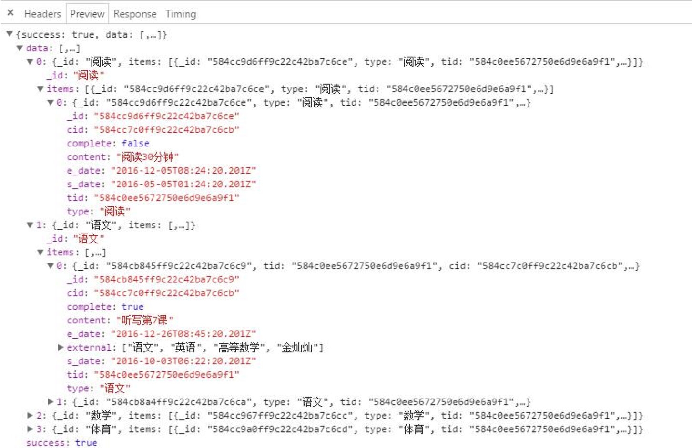

关于node异步流程控制
背景问题：对查询结果，二次循环插入一个字段，这个字段是数据库再次查询而得。最后将结果返回时，发现为空？？
闭包
常见问题：
比较常见的闭包问题就像fun1所示，本来应该依次输出0-9，然而最后输出都为10。因为setTimeout是异步的，我的理解是i++执行的速度比console.log()快很多，所以i一下子就加到了10，最后输出就都是10。
解决方式：
用闭包如fun2，创建一个独立的作用域，可以把每一次的i保存下来，fun3中的forEach也是如此
function fun1(){
for(var i = 0; i < 10; i++){
setTimeout(function(){
console.log(i);
},1000)
}
}
function fun2(){
for(var i = 0; i < 10; i++){
(function(i){
setTimeout(function(){
console.log(i);
},1000)
})(i)
}
}
function fun3(){
var i_array = [0,1,2,3,4,5,6,7,8,9];
i_array.forEach(function(i){
setTimeout(function(){
console.log(i);
},1000)
})
}
fun1(); fun2(); fun3();
执行结果：
---------------fun1--------------
10
10
10
10
10
10
10
10
10
10
---------------fun2--------------
0
1
2
3
4
5
6
7
8
9
---------------fun3--------------
0
1
2
3
4
5
6
7
8
9
node异步流程控制
常见的处理方式：
- callback
- eventproxy
- bluebird
- async
我这边mongoose的Promise用的是bluebird,解决回掉金字塔。异步流程控制用的是朴大大的eventproxy，因为看了很久bluebird的文档，折腾了下失败了，听说很强大。
bluebird 替代mongoose的Promise
npm i bluebird -D
app.js
var Promise = require('bluebird')
Promise.promisifyAll(mongoose)
bluebird中promisifyAll，将对象所有的方法都统一处理，用的时候就方法名后+Async即可
eventproxy 流程控制
每次二次查询结束后，提交一个事件
ep.emit('task_ready')
然后在ep.after中监督，n为提交次数，等所有事件都完毕后，再将结果返回
ep.after('task_ready', n, function(){
console.log(tasks)
resjson(res,true,tasks,null)
})
//查询当天或者一段时间的作业及完成情况
getTasksByDate: function(req, res, next){
var sid = '584c0e7c672750e6d9e6a9ee'
var n = 0
Task.aggregateAsync(
{$match: {s_date:{$gt:new Date(2016,1,1),$lt: new Date(2016,12,25)}}},
{$group: {_id: '$type', items: {$push: "$$ROOT"}}}
)
.then(function(tasks){
//两次循环，对请求的数据增加 complete字段
tasks.forEach(function(task){
n += task.items.length
})
var ep = new EventProxy()
tasks.forEach(function(task){
task.items.forEach(function(subTask){
DoTask.findOneAsync({sid:sid,taskId:subTask._id})
.then(function(stu_task){
console.log(stu_task)
subTask.complete = stu_task ? true : false
ep.emit('task_ready')
})
.catch(function(err){
console.log(err)
})
})
})
ep.after('task_ready', n, function(){
console.log(tasks)
resjson(res,true,tasks,null)
})
})
.catch(function(err){
console.log(err)
res.send('error')
})
}
执行结果：
可以看到complete新字段被成功插入 
参考资料：
[1] eventproxy github. [2] bluebird英文文档. [3] bluebird中文文档. [4] alsotang的《使用 eventproxy 控制并发》.